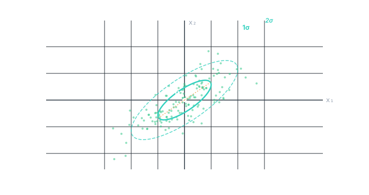
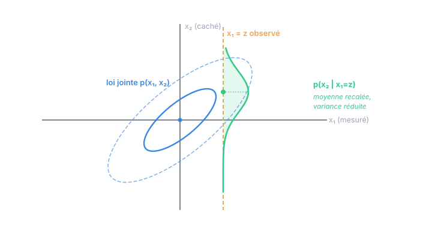

Chapitre 03
La loi gaussienne, reine du filtre
Objectifs du chapitre
- Reconnaître la gaussienne, scalaire puis multivariée, et lire une ellipse de covariance.
- Comprendre les trois propriétés de clôture qui font tout marcher : stabilité par transformation linéaire, par marginalisation, par conditionnement.
- Établir la formule de fusion de deux gaussiennes (le cas scalaire de la mise à jour de Kalman).
- Voir pourquoi une gaussienne se résume entièrement à sa moyenne et sa covariance — d'où un filtre qui ne suit que ces deux objets.
1. La cloche, scalaire puis vectorielle
La loi normale (ou gaussienne) scalaire de moyenne μ et variance σ² a pour densité la célèbre courbe en cloche :
Tout est dans l'exposant : un écart au carré divisé par la variance. Loin de la moyenne, l'écart au carré explose, la densité s'effondre. La constante devant ne sert qu'à faire une aire totale de 1. On note x ∼ N(μ, σ²).
En dimension n, la variance devient la matrice de covariance Σ du chapitre 2, et l'écart au carré devient une forme quadratique :
Le cœur est (x − μ)ᵀ Σ⁻¹ (x − μ) : la distance de Mahalanobis au carré. C'est une distance à la moyenne pondérée par l'inverse de la covariance — s'écarter dans une direction très incertaine « coûte » peu, s'écarter dans une direction bien connue coûte cher. Cette forme quadratique reviendra à chaque dérivation du filtre.
Σ⁻¹ s'appelle la matrice d'information (ou de précision). Là où Σ mesure le doute, son inverse mesure la certitude. Fusionner deux gaussiennes, on le verra, revient à additionner leurs informations — ce qui est d'une simplicité désarmante et éclaire tout le filtre.
2. Lire une ellipse de covariance
À deux dimensions, les lignes de niveau d'une gaussienne (les points d'égale densité) sont des ellipses centrées sur μ. Leur forme est dictée par Σ : les axes de l'ellipse pointent le long des directions propres de Σ, et leurs demi-longueurs valent √λ (racines des valeurs propres). On trace en général l'ellipse à 1σ (elle contient environ 39 % de la masse en 2D) et à 2σ (~86 %).

Une ellipse ronde signifie des composantes décorrélées et de même variance ; une ellipse allongée et inclinée signale une forte corrélation. Toute la « mémoire » du filtre sur la forme de son incertitude tient dans cette ellipse — que la prédiction va étirer et la correction resserrer (chapitres 6 et 7).
3. Trois propriétés magiques (les clôtures)
Si le filtre de Kalman existe, c'est parce que la famille gaussienne est stable sous exactement les trois opérations dont le filtrage a besoin. « Stable » veut dire : partez d'une gaussienne, appliquez l'opération, vous retombez sur une gaussienne. Vous n'aurez donc jamais à suivre qu'une moyenne et une covariance — jamais une distribution biscornue.
3.1 Stabilité par transformation linéaire
Si x ∼ N(μ, Σ) et y = A·x + b, alors y est encore gaussienne :
C'est exactement la règle reine du chapitre 2, avec en prime la garantie que la forme reste gaussienne. Voilà la prédiction qui se profile : propager une gaussienne à travers la dynamique linéaire F redonne une gaussienne.
3.2 Stabilité par marginalisation
Si on a une gaussienne jointe sur (x₁, x₂) et qu'on « oublie » x₂ (on l'intègre), la loi restante sur x₁ est gaussienne — et sa moyenne et sa covariance sont simplement les blocs correspondants de la jointe. Marginaliser une gaussienne, c'est juste rayer des lignes et des colonnes. Rien à calculer.
3.3 Stabilité par conditionnement
C'est la propriété reine pour la correction. Si (x₁, x₂) sont conjointement gaussiens et qu'on observe x₁ = z, alors la loi de x₂ sachant cette observation reste gaussienne. Sa moyenne se décale vers la valeur observée, et surtout sa covariance diminue : observer réduit le doute. C'est ce que montre la figure.

Formules du conditionnement gaussien (à connaître — le chapitre 7 les réutilise mot pour mot). Pour (x₁, x₂) gaussiens de moyennes μ₁, μ₂ et de blocs de covariance Σ₁₁, Σ₁₂, Σ₂₂, la loi de x₂ sachant x₁ = z est N(μ', Σ') avec :
Σ' = Σ₂₂ − Σ₂₁ Σ₁₁⁻¹ Σ₁₂
Reconnaissez la structure : une moyenne corrigée par un gain Σ₂₁ Σ₁₁⁻¹ multipliant l'écart (z − μ₁), et une covariance diminuée d'un terme toujours positif. Ce gain est le gain de Kalman déguisé.
4. Fusionner deux gaussiennes (le cas scalaire de la mise à jour)
Prenons deux informations gaussiennes indépendantes sur la même grandeur scalaire : un a priori N(a, A) (issu du modèle) et une mesure N(b, B) (issue du capteur). Les fusionner, c'est multiplier leurs densités puis renormaliser. Le produit de deux gaussiennes est encore une gaussienne, de paramètres :
c = C · ( a/A + b/B ) (moyenne pondérée par les informations)
C'est la figure 1.1 du premier chapitre, rendue quantitative. Réécrivons la moyenne fusionnée sous une forme lourde de sens :
C = (1 − K)·A
De la forme « information » à la forme « gain ». La variance fusionnée :
La moyenne, en repartant de c = C(a/A + b/B) et en factorisant :
On a fait apparaître le gain K = A/(A+B) : la part d'incertitude de l'a priori dans l'incertitude totale. L'estimation fusionnée part de l'a priori a et se déplace d'une fraction K de l'écart (b − a) vers la mesure.
Regardez K = A/(A+B). Si l'a priori est très incertain (A grand) ou la mesure très sûre (B petit), K → 1 : on saute vers la mesure. Si au contraire la mesure est mauvaise (B grand), K → 0 : on garde l'a priori. Et la variance finale C = (1−K)A est toujours inférieure à A : on gagne toujours en certitude. Vous venez de dériver la mise à jour scalaire du filtre de Kalman — le chapitre 7 ne fera que la revêtir de matrices.
Cette fusion suppose les deux sources indépendantes. Fusionner deux mesures qui partagent une source d'erreur commune (même horloge, même biais) comme si elles étaient indépendantes conduit à un excès de confiance : la variance fusionnée annoncée est trop petite, le filtre devient « trop sûr de lui » et finit par ignorer la réalité. Garder les hypothèses honnêtes est vital (chapitre 10).
5. Deux nombres suffisent
Une gaussienne est entièrement caractérisée par sa moyenne et sa covariance : aucun autre paramètre n'existe. Combinée aux trois clôtures, cette propriété a une conséquence énorme pour l'implémentation : un filtre qui travaille en linéaire-gaussien n'a jamais besoin de stocker autre chose que x (la moyenne) et P (la covariance). Toute la richesse d'une distribution de probabilité sur un espace continu tient dans un petit vecteur et une petite matrice, mis à jour par de l'algèbre linéaire. C'est ce qui rend le filtre calculable en temps réel, cycle après cycle.
Résumé stratégique : linéaire → la transformation garde la forme gaussienne (prédiction) ; gaussien → conditionner garde la forme gaussienne (correction) ; deux paramètres → tout tient dans (x, P). Ces trois faits sont le filtre de Kalman. Le reste du cours ne fait que les mettre en musique.
Exercices
Exercice 1 — Fusion de deux capteurs
Deux capteurs de température indépendants mesurent la même pièce. Le premier donne 20,0 °C avec une variance de 1,0, le second 22,0 °C avec une variance de 0,25. Quelle est l'estimation fusionnée et sa variance ?
Voir la solution
Informations : 1/A = 1, 1/B = 4. Somme = 5, donc C = 1/5 = 0,20.
L'estimation 21,6 °C penche vers le capteur le plus précis (le second), et la variance fusionnée 0,20 est plus petite que les deux (0,25 et 1,0). Vérification par le gain : K = A/(A+B) = 1/1,25 = 0,8, d'où c = 20 + 0,8·(22 − 20) = 21,6. ✓
Exercice 2 — Le rôle de la corrélation dans le conditionnement
Dans la formule Σ' = Σ₂₂ − Σ₂₁ Σ₁₁⁻¹ Σ₁₂, que devient la variance conditionnelle de x₂ si x₁ et x₂ sont décorrélés (Σ₂₁ = 0) ? Qu'en conclure sur l'utilité d'observer x₁ ?
Voir la solution
Si Σ₂₁ = 0, le terme soustrait s'annule et Σ' = Σ₂₂ : la variance de x₂ ne change pas. Observer x₁ n'apprend rien sur x₂ quand les deux sont décorrélés — c'est cohérent avec le §2.1 : pour des gaussiennes, décorrélé = indépendant. Toute l'information transite par les termes croisés Σ₂₁. Un capteur n'améliore une composante cachée que dans la mesure où celle-ci est corrélée à ce qu'il mesure.
Récapitulatif
- Gaussienne : p(x) ∝ exp(−½ (x−μ)ᵀ Σ⁻¹ (x−μ)). Le cœur est la distance de Mahalanobis ; Σ⁻¹ est l'information.
- En 2D, lignes de niveau = ellipses orientées par les axes propres de Σ, de demi-axes √λ.
- Trois clôtures : linéaire (→ prédiction), marginalisation (rayer lignes/colonnes), conditionnement (→ correction).
- Conditionner : μ' = μ₂ + Σ₂₁Σ₁₁⁻¹(z−μ₁), Σ' = Σ₂₂ − Σ₂₁Σ₁₁⁻¹Σ₁₂ — un gain qui recale, une covariance qui diminue.
- Fusion scalaire : informations additives 1/C = 1/A + 1/B, et forme gain c = a + K(b−a), K = A/(A+B), C = (1−K)A — la mise à jour de Kalman en miniature.
- Une gaussienne tient en deux paramètres (x, P) : c'est ce qui rend le filtre calculable en temps réel.